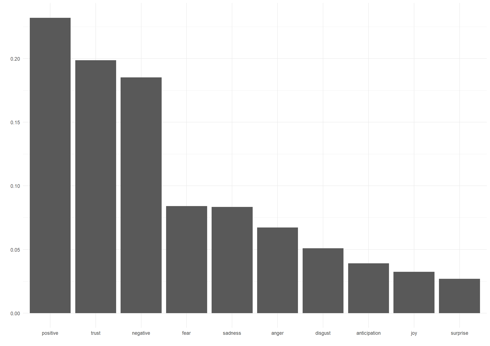
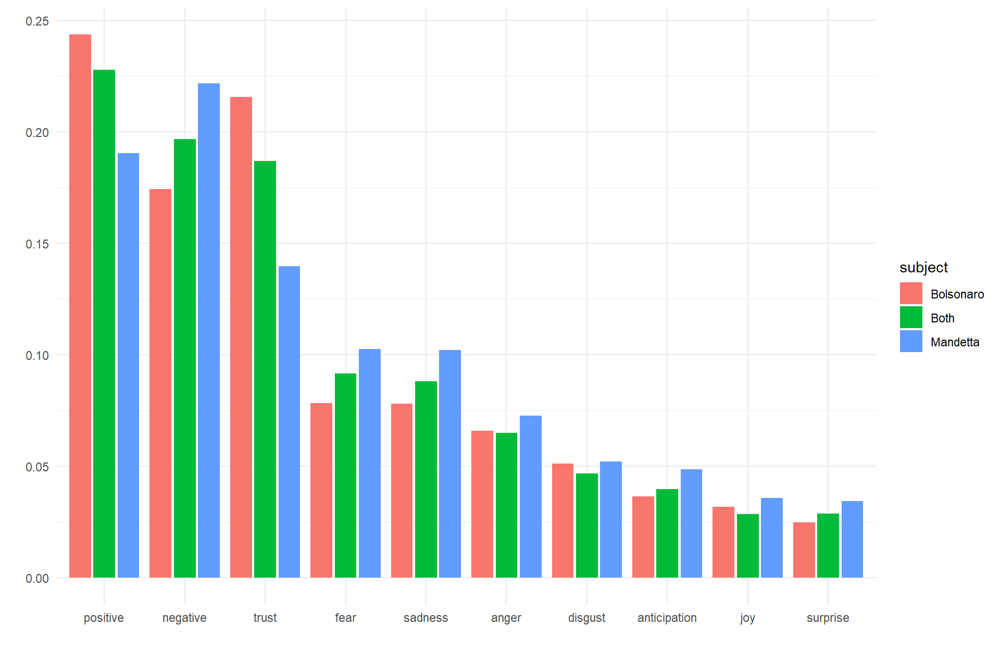

Como o brasileiro reage às respostas dos atores políticos à COVID-19? Compreendemos que, a nível nacional, os principais responsáveis pelo combate à pandemia são o chege do Executivo e o Ministro da Saúde, por ser o responsável pela pasta que lida diretamente com o problema. Para acessarmos a opinião dos indivíduos sobre as medidas que vêm sendo tomadas até então para miminizar os danos causados pelo coronavírus ao Brasil, realizamos uma análise de sentimentos de postagens de brasileiros no Twitter. Esta abordagem tem como objetivo mensurar sentimentos e emoções contidas no texto que compõem os tweets com o auxílio de dicionários específicos, que classificam palavras e expressões de acordo com a principal emoção a qual está ligada. Assim, podemos ter uma ideia de quais sentimentos (alegria, tristeza, medo, ansiedade, etc.) estão ligados à figura do presidente Jair Bolsonaro e do ministro da saúde, Luiz Henrique Mandetta. Nossos dados são compostos por 80328 tweets baixados no período entre 2020-03-30 02:27:16 a 2020-04-07 18:43:56. Apesar de não ser uma amostra representativa da população brasileira, tendo em vista que apenas 70% dos brasileiros possuem acesso à internet1 e apenas 8,28 milhões de usuários no Twitter2, podemos ter uma ideia de como se comporta uma parte da população brasileira em relação aos principais atores políticos que deveriam estar combatendo a pandemia.
Fizemos o download de 80328 tweets no período que vai de 2020-03-30 02:27:16 a 2020-04-07 18:43:56 que mencionam uma das seguintes palavras: “bolsonaro”, “presidente”, “ministro da saude” e “mandetta”. A API padrão do Twitter restringe o download dos tweets aos últimos sete dias, o que nos impede de analisar o total de posts desde o início da pandemia da covid-19 no Brasil, que registrou seu primeiro caso no dia 27 de fevereiro. Após os tweets serem coletados, transformamos o conteúdo dos tweets num corpus3 procedemos com a limpeza do texto removendo as stopwords4 contidas nas postagens.
Para a análise de frequência das palavras e hashtags transformamos o corpus em um objeto denominado document feature matrix (DFM), que é formada por um conjunto de \(d\) documentos e \(p\) palavras. A DFM é uma matriz \(D \times P\), onde \(D = \{1, 2, 3, ..., d\}\) e \(P = \{1, 2, 3, ..., p\}\), sendo \(p\) igual ao número de palavras contidas no corpus correspondente ao conjunto de documentos. Cada elemento da matriz corresponde à quantidade de palavras \(p\) contidas no documento \(d\). A partir disso, calculamos a frequência total de cada palavra contida no corpus e elaboramos uma nuvem das palavras mais frequentes.
A Figura @ref(fig:cloud) ilustra as palavras mais frequentes nos tweets entre 2020-03-30 02:27:16 a 2020-04-07 18:43:56
Nuvem de palavras das palavras mais frequentes nos tweets
Já a Figura @ref(fig:sentiment-data) ilustra a contagem de palavras contidas nos tweets de acordo com cada tipo de emoção. Observamos que as palavras consideradas positivas são maioria nos tweets dos brasileiros que mencionam os termos de busca utilizados. As emoções mais presentes são confiança e medo. Por último, observamos pequenas manifestações de alegria e surpresa com os tweets publicados quando se referem aos dois principais atores do combate ao coronavírus no Brasil.

Também dividimos os tweets de acordo com o assunto que abordam. A atribuição dos valores para esta variável ocorreu da seguinte forma: se um tweet mencionar a palavra “bolsonaro” ou “presidente”, o assunto deste tweet será classificado como “bolsonaro”. Caso mencione as palavras “mandetta” ou a expressão “ministro da saúde”, o assunto deste post será classificado como “mandetta”. Para todos os outros casos, o tweet recebeu a categoria “both” na variável assunto. Podemos observar que predominam tweets positivos em relação a Bolsonaro, bem como emoções de confiança. No entanto, devemos ter em mente que aproximadamente 55% das publicações pró-Bolsonaro no Twitter são realizadas por robôs5.

Disponível em: https://g1.globo.com/economia/tecnologia/noticia/2019/08/28/uso-da-internet-no-brasil-cresce-e-70percent-da-populacao-esta-conectada.ghtml↩
Disponível em: https://www.tecmundo.com.br/redes-sociais/144654-brasil-10-paises-usuarios-twitter.htm↩
Formato de objeto texto em linguagem natural para implementação de análise quantitativa de texto.↩
palavras consideradas irrelevantes para o conjunto de resultados de uma busca. Ex: de, as, o, para, com, etc.↩
Disponível em: https://valor.globo.com/politica/noticia/2020/04/03/55-de-publicacoes-pro-bolsonaro-sao-feitas-por-robos.ghtml↩